Presenter script and shot list
The spoken script, the screen to be on for every beat, the code to open, and the exact artefact that backs each claim — with every screenshot captured from the running application.
| Purpose | Portfolio or technical interview video |
| Target length | About 1,300 spoken words · 10 minutes at 125–135 wpm |
| Style | Calm, clear, business-first, then technical depth |
| Demo workflow | Concept Note to 10-Page Methodology Section (14 nodes, 18 edges) |
| Demo run | ed462b3e — completed, 23 min 33 s, $6.6495 |
| Failure demo | 3d46a8ee — failed at graphnormalizer_1 |
| Evidence demo | 1f2c3a4d — evidence stage, 19 claims, 0 verified |
| Code snapshot | main at 7ca16b2 |
| Document date | 9 August 2026 |
Prepare the run | open the tabs | then speak
Every claim in the script has a specific artefact behind it. Have them open.
| Tab | Route | Used in beat |
|---|---|---|
| Workflow Library | /library | 1, 2 |
| Guided Run | /history → run ed462b3e → Open in Guided | 3 |
| Cockpit (completed) | same run → Open in Cockpit | 3 |
| Cockpit (failed) | /history → run 3d46a8ee → Open in Cockpit | 3, 8 |
| Builder | /builder/concept_note_to_10-page_methodology_section1 | 4 |
| Editor | app/runtime/compiler.py at _make_runtime_fn (line 63) | 5 |
| Evidence record | run 1f2c3a4d → verify_evidence.qa_report | 6 |
| Cost ledger | Mongo cost_ledger, filtered to ed462b3e | 7 |
Bring up MongoDB, Weaviate, MinIO and Redis from docker-compose.yml, start the
FastAPI backend and the Vite dev server, and confirm /health reports
ready: true before recording — a readiness failure mid-take is the one interruption
that cannot be edited out.
outline requested claude-sonnet-4-5 and
gpt-5.6-terra ran. Beat 7 uses it.Sources (0). Beat 6 therefore traces the
evidence lifecycle in a run that genuinely exercised it — and the honest result there is
zero verified claims, which is a stronger demonstration than a happy path.
Rehearse at 125–135 words per minute and pause when changing screens. The Say blocks total about 1,300 words. Claim nothing about adoption, accuracy, savings or production health — the parts that are evidenced are more persuasive without it.
/library, with the concept-note workflow visible in the grid.
Sidebar expanded. Cost badge reading $0.0000 this run.
"Hello, I am Ayush Khandelwal. This is Eurskem AI, a reusable platform for building and operating evidence-grounded AI workflows.
I will demonstrate it through proposal development, where research, evidence checking, drafting, review, and cost control must work together. A chatbot hides these steps. This platform makes them visible, configurable, testable, and recoverable.
I will begin with the non-technical user experience and then move into the Builder, runtime, research integrity, and cost controls."
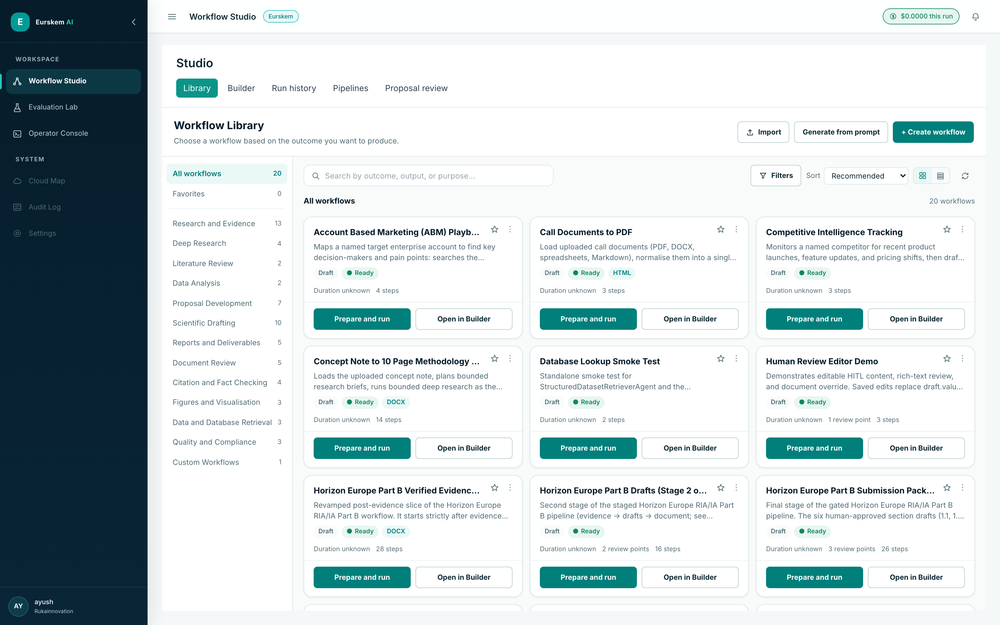
/library — twenty workflows discovered
from the workflows/ directory, grouped by outcome rather than by graph shape. Let the
category counts sit on screen for a beat: they are the registry's own capability declarations, and
they make "reusable platform" visible before you have to assert it.14 steps badge and the DOCX output tag.
"I start in the Workflow Library. Workflows are presented by their business goal, not only by a technical graph.
This workflow takes a call or request for proposal, gathers relevant evidence, develops structured content, introduces human review points, and produces a cited deliverable. Its definition is versioned, while the underlying node types and runtime are reusable. Proposal generation is therefore one use case of the platform; it is not hard-coded as the platform itself.
For this recording, I am using prepared data and an existing run so the demonstration remains repeatable and does not depend on live provider response times."
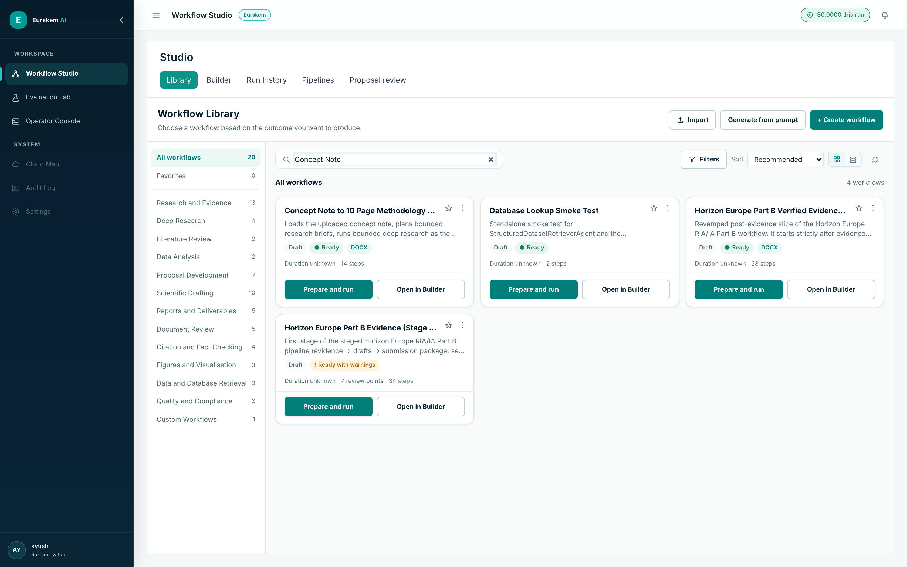
workflows/concept_note_to_10-page_methodology_section1.yaml. It is 352 lines of
the same WorkflowSpec contract every other workflow uses — typed inputs, nodes,
edges, and Guided Run copy. There is no proposal-specific branch in the runtime.
/history → run ed462b3e → Open in Guided. Show the
stage rail, the attention panel and the outputs. Then Open in Cockpit from the
same run, and switch to the failed run 3d46a8ee to show live node states.
"Guided Run is designed for project administrators and domain experts. Instead of node IDs and raw payloads, it shows business stages: understanding the request, collecting evidence, developing content, reviewing, and producing the output.
For the current stage, the user can see what is happening, why it matters, and what will receive its result. Approvals and failures appear in one attention area, so the user does not need to inspect a technical graph.
I will now open the same run in Cockpit. This does not start another execution. The run ID, workflow version, outputs, and audit context remain the same.
Cockpit answers a more technical question: which node is running, paused, completed, or failed? Live events update the graph, while a human-review node can pause execution for approval, rejection with a reason, or an edited response. Guided Run and Cockpit therefore support different users without creating two workflow engines."
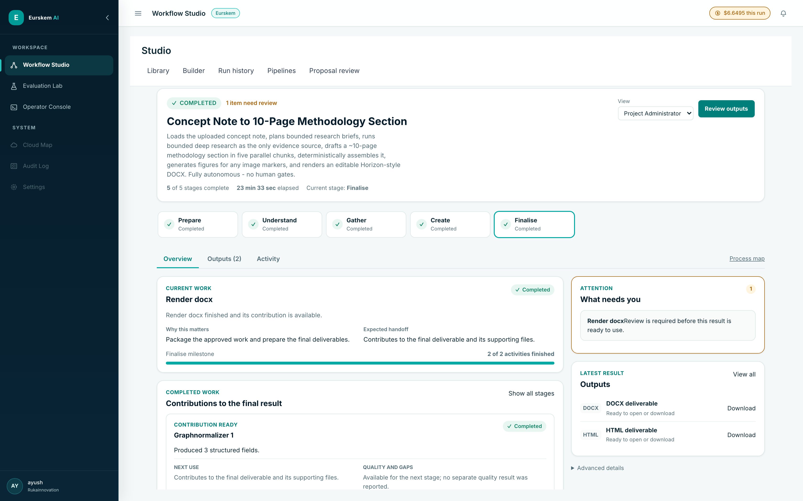
ed462b3e — five stages
complete, 23 min 33 s elapsed, a plain-language account of the current work and why it matters, and
a single "What needs you" panel holding the one item that requires a decision. Nothing in the
primary reading path is a node ID, a prompt or a payload.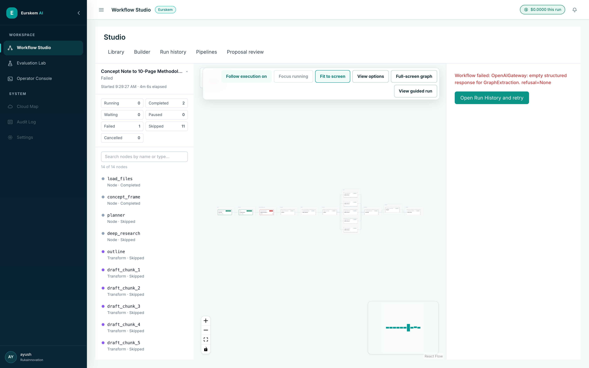
3d46a8ee — the same
workflow rendered as execution state: lifecycle counters, a per-node status list, the live graph,
and the failure that stopped this run with a retry route beside it.completed (ui/src/modes/studio/Cockpit.tsx:370). Opening
ed462b3e lands on the rendered DOCX and its Variables / Sources / Audit / Score tabs —
good for beat 6, wrong for showing node lifecycle. Use the failed run 3d46a8ee for the
graph. Say the quiet part out loud: "this is an earlier attempt that failed, which is the
honest way to show what the graph does when something goes wrong." It costs four seconds and
buys credibility.
/builder/concept_note_to_10-page_methodology_section1. Show the four areas, then
select deep_research and step the inspector through Configure →
Map data → Test → Checks, then
Versions.
"The Builder has four stable areas: the action bar, a searchable and categorised node library, the canvas, and a persistent Inspector.
The library is populated from the backend node registry. Each capability declares its configuration, inputs, and outputs. Selecting a node creates a typed form from that contract, which reduces invalid free-text configuration.
In Map Data, I can connect an input to an upstream output. The variable picker only exposes data available at this point in the graph, and the saved reference remains explicit.
Before saving or running, preflight validates the workflow without spending model tokens. It catches missing configuration, unsafe references, orphaned edges, invalid routes, or incomplete user guidance. Each issue links back to the affected node.
I can also prepare a node-level or branch-level test instead of executing the complete workflow. It still uses the normal preflight and runtime path.
Incomplete changes are autosaved as a recoverable draft, separately from the last executable workflow. A strict save creates an immutable version. Version history lets me compare, restore, or recover work without allowing an incomplete draft to replace a known runnable version."
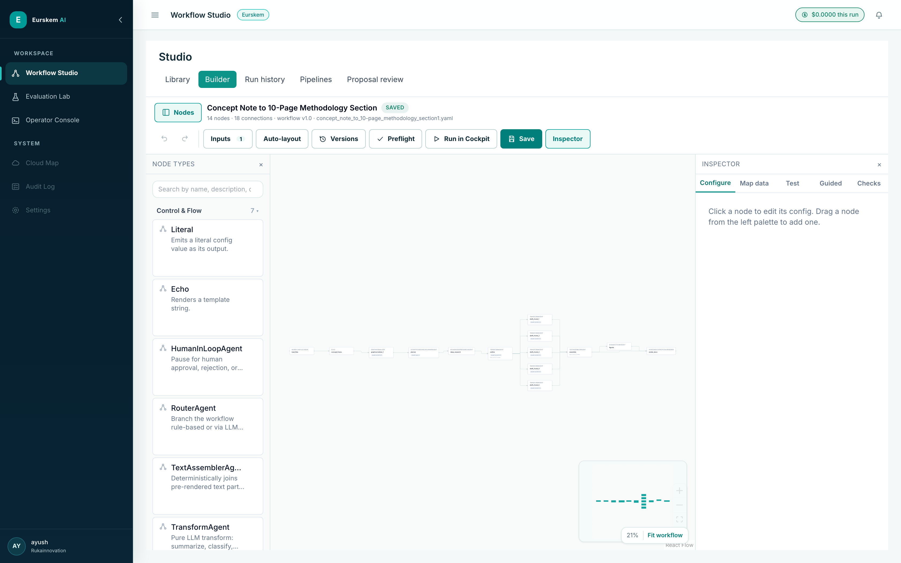
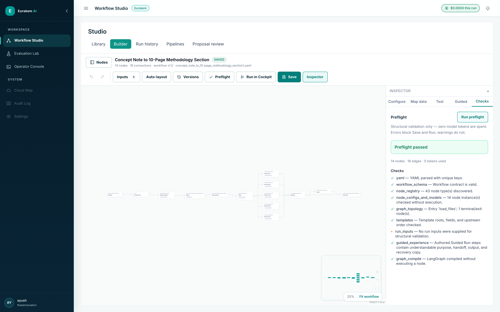
run_inputs, the one neutral dot: no run inputs were
supplied for a structural check, and it is deliberately not an error.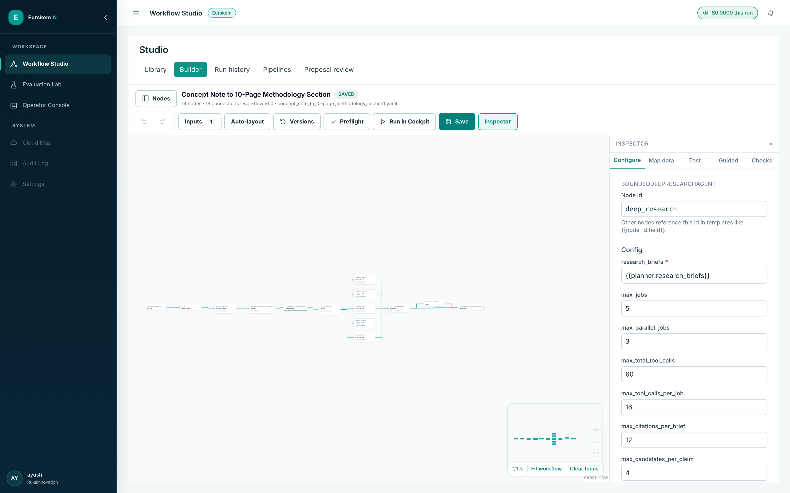
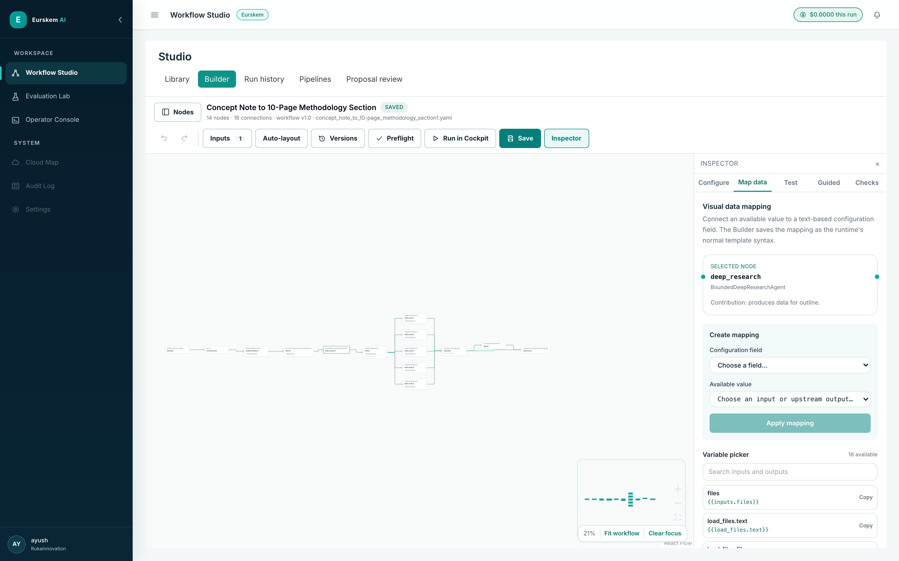
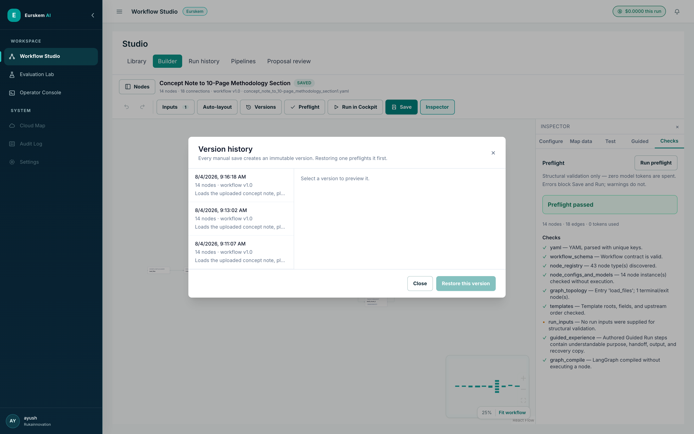
def _atomic_write(path: Path, text: str) -> None:
path.parent.mkdir(parents=True, exist_ok=True)
temporary = path.with_name(f".{path.name}.{uuid.uuid4().hex}.tmp")
temporary.write_text(text, encoding="utf-8")
temporary.replace(path) # atomic — no half-written workflow
def save_workflow(self, name: str, yaml_text: str) -> str:
path = self.workflow_path(name)
if path.exists():
current = path.read_text(encoding="utf-8")
if current != yaml_text:
self.record_version(name, current) # keep what is being replaced
_atomic_write(path, yaml_text)
version_id = self.record_version(name, yaml_text)
self.delete_draft(name)
return version_id
_make_runtime_fnapp/runtime/compiler.py, line 63. Scroll slowly through the reuse branch,
the with_context binding, the pause check, and
output_schema(**output). Do not read the code aloud — narrate what each region
guarantees.
"The most important runtime boundary is _make_runtime_fn in the compiler.
The validated workflow is compiled into a LangGraph state graph, and every node is added through this wrapper rather than being executed directly. This gives all node types the same operational controls.
The wrapper receives shared typed state containing the run ID, previous outputs, citations, and audit information. Large files are represented by object-store keys rather than raw bytes, keeping the state smaller and serialisable.
The LLM gateway is then bound to the current run and node. Any model call made through it can be attributed correctly. Node lifecycle events — started, completed, paused, or failed — are published to the event layer and update Cockpit.
Typed configuration and structured outputs provide validation boundaries. If execution fails, the error stays connected to the node and run. The executor and checkpointer retain the state needed for an allowed retry, resume, or human decision.
This single boundary keeps context, events, audit, validation, cost attribution, and recovery consistent. Implementing these separately inside each node would create drift as the library grew."
def _make_runtime_fn(instance, bus: RunEventBus | None, services: dict):
node_id = instance.node_id
type_name = instance.type_name
async def runtime_fn(state: dict) -> dict:
run_id = state.get("inputs", {}).get("SYSTEM.run_id")
session_id = state.get("session_id", "unknown")
audit = services.get("audit_db")
# (1) RETRY REUSE — returns before any gateway is bound,
# so a replayed LLM node consumes zero new tokens.
cached_result = (services.get("reused_node_results") or {}).get(node_id)
if cached_result is not None:
... # publish node_reused, write audit, re-checkpoint, return
# (2) COST ATTRIBUTION — with_context() returns a shallow clone,
# so parallel branches get isolated context without locking.
llm = services.get("llm")
node_services = {**services, "llm": llm.with_context(
run_id=run_id or "unknown", session_id=session_id, node_id=node_id,
ledger=services.get("cost_ledger"), event_bus=bus, node_type=type_name,
allowed_models=getattr(instance, "_allowed_models", None),
routing_policy=getattr(instance, "_model_routing", None),
entity_tokenizer=services.get("entity_tokenizer"),
collection_id=state.get("collection_id", "default"),
processing_mode=(getattr(instance, "_data_protection_mode", None)
or services.get("entity_protection_mode")),
)}
instance.services = node_services
# (3) EVENTS + AUDIT — one publish/write pair for every node type.
await bus.publish(RunEvent(type="node_started", run_id=run_id, ...))
await write_audit_event(audit, run_id, session_id, node_id, NODE_START)
with metrics.track_node(type_name):
# (4) TEMPLATE RESOLUTION against live state.
resolved = resolve(instance.config.model_dump(), state)
await record_node_started(audit, ...,
node_input=build_node_input(state, resolved))
# (5) COOPERATIVE PAUSE — checked at the node boundary, because
# nothing can interrupt an in-flight provider call.
if await is_pause_requested(audit, run_id=run_id, session_id=session_id):
interrupt({"kind": "user_requested_pause", "node_id": node_id})
# (6) INVOKE + VALIDATE.
output = await instance.run(state, resolved)
validated = instance.output_schema(**output)
1f2c3a4d: its acquire_research_sources.report,
then verify_evidence.qa_report, then a single verified_claims entry.
Have app/evidence/models.py open in a second tab for EvidencePolicy.
"Next, I will trace one research claim. The central rule is that discovering a source is not the same as verifying evidence.
Candidate discovery searches approved scholarly and other sources and records identifiers and metadata. These are candidates only. A matching title or abstract does not automatically become a proposal citation.
The following stages obtain available content, remove duplicates, and rank passages for the research question. Exact-passage verification then records the source, the supporting passage, its location, and the claim it is intended to support.
I want to show you a run where that gate actually held. This evidence stage examined nineteen critical claims. Source acquisition resolved no canonical URLs into immutable full text, so verification had nothing to quote against. The result is nineteen unresolved claims, nineteen blocking issues, and zero verified claims. The acquisition node records it in one line: no search snippet and no Deep Research prose was promoted to verified evidence.
That is the behaviour I designed for. A system optimised to look productive would have cited the dossier prose it already had, and nineteen plausible sentences with plausible references are indistinguishable from good work until an evaluator checks them.
There is an important distinction: retrieval says a passage is relevant; exact-passage verification says it supports the stated claim. Neither alone proves that the source is authoritative. Important decisions still require source-quality rules and domain review."
"Acquired 0 immutable cited source version(s) directly from canonical URLs; rejected 0. No search snippet or Deep Research prose was promoted to verified evidence."
{
"policy_version": "eurskem-evidence-v2.0",
"claims_examined": 19, "critical_claims": 19,
"verified_claims": 0, "qualified_claims": 0,
"unresolved_claims": 19,
"sources_retained": 0, "sources_rejected": 0,
"full_text_evidence_rate": 0.0,
"exact_locator_rate": 0.0,
"critical_independent_support_rate": 0.0,
"warnings": ["No proposal-grade citations passed all hard gates."]
}
{
"claim_id": "CL-1",
"materiality": "critical",
"evidence_requirement": "2 independent full-text source(s), exact locator,
contradiction search",
"final_status": "not_found",
"verified_sentence": "",
"source_ids": [], "evidence_link_ids": [],
"unresolved_issue": "0/2 independent supporting sources;
contradiction search not completed",
"human_review_required": true
}
class EvidencePolicy(BaseModel):
model_config = ConfigDict(extra="forbid") # a typo fails loudly
policy_version: str = "eurskem-evidence-v2.0"
minimum_independent_sources_for_critical_claim: int = Field(default=2, ge=1, le=5)
minimum_full_text_sources_for_state_of_art_claim: int = Field(default=1, ge=1, le=5)
minimum_support_confidence: float = Field(default=0.72, ge=0.0, le=1.0)
allow_abstract_only_support: bool = False
allow_preprint_as_sole_support: bool = False
allow_search_snippet_as_evidence: bool = False
require_exact_locator: bool = True
ed462b3e shows Sources (0) in Cockpit, and that is correct: its
evidence base is bounded Deep Research dossiers, and it never invokes the acquire/verify chain.
Tracing a claim there would mean narrating a pipeline the run did not execute. Use
1f2c3a4d, which did.recommended_action: search_again, blocking: true). Source resolution
coverage is the next piece of engineering, and it is the limitation you raise yourself in beat 8.
$6.6495 this run for ed462b3e, then the
cost_ledger rows for that run — sorted by cost, with the outline row in
view.
"Every model call made through the gateway is written to the cost ledger with its run ID and node ID. The record includes the intended model, actual model, input and output tokens, and calculated cost.
Intended and actual model are stored separately because a configured fallback may execute during a provider failure or rate limit. In this run, one did. The outline node requested Claude Sonnet four-five, and a different model actually ran. The workflow still completed and the deliverable was still produced — but that substitution is a recorded fact rather than an invisible one, which is the entire point of storing both fields.
Per-node telemetry turns cost into an engineering control. Discovery is forty-three percent of the spend on this run, and the five parallel drafting chunks are another forty-five percent, at almost identical input sizes — which is what a correct fan-out should look like. I can then use a smaller model for classification, batch compression, cache stable retrieval results, or reserve a stronger model for final synthesis.
It also supports debugging. If a node produces output but has no cost entry, I would check whether its call bypassed the context-bound gateway."
| Node | Intended | Actual | Calls | In | Out | USD |
|---|---|---|---|---|---|---|
deep_research | gpt-5.6-sol | gpt-5.6-sol | 4 | 357,723 | 35,249 | 2.8461 |
draft_chunk_4 | claude-sonnet-4-5 | claude-sonnet-4-5 | 1 | 178,129 | 8,000 | 0.6544 |
draft_chunk_5 | claude-sonnet-4-5 | claude-sonnet-4-5 | 1 | 178,126 | 4,872 | 0.6075 |
draft_chunk_3 | claude-sonnet-4-5 | claude-sonnet-4-5 | 1 | 177,987 | 4,072 | 0.5950 |
draft_chunk_1 | claude-sonnet-4-5 | claude-sonnet-4-5 | 1 | 178,115 | 3,519 | 0.5871 |
draft_chunk_2 | claude-sonnet-4-5 | claude-sonnet-4-5 | 1 | 178,167 | 3,076 | 0.5806 |
outline | claude-sonnet-4-5 | gpt-5.6-terra | 1 | 142,614 | 3,523 | 0.3275 |
planner | claude-opus-5 | claude-opus-5 | 1 | 36,228 | 3,595 | 0.2830 |
graphnormalizer_1 | claude-sonnet-4-5 | claude-sonnet-4-5 | 1 | 9,015 | 7,859 | 0.1683 |
| Total — run ed462b3e | 12 | 1,436,104 | 73,765 | 6.6495 | ||
eurskem_ai.cost_ledger · run ed462b3e{
"run_id": "ed462b3e-4b25-4e54-a0be-c8e46b516e05",
"node_id": "outline",
"intended_model": "claude-sonnet-4-5",
"model": "gpt-5.6-terra", <-- a fallback actually ran
"input_tokens": 142614, "output_tokens": 3523,
"cost_usd": 0.327504
}
"One limitation I would address next is that traceability is not the same as source authority.
The platform can show that a sentence is linked to an exact passage. However, that passage may come from a weak study, an outdated publication, or evidence that is unsuitable for the claim. Exact matching cannot make that judgement reliably.
My engineering change would be an evidence-quality gate before drafting. I would add structured fields for source type, date, peer-review status, study design, retraction or correction status, and domain-specific quality criteria. Deterministic rules would block clearly unsuitable evidence, while a domain expert would review high-impact or uncertain claims.
The truth graph would store both passage support and the quality decision, including who approved it and under which policy version. I would test it with a versioned evaluation set containing supported and unsupported claims, conflicting evidence, retracted sources, and passages that appear relevant but do not justify the conclusion."
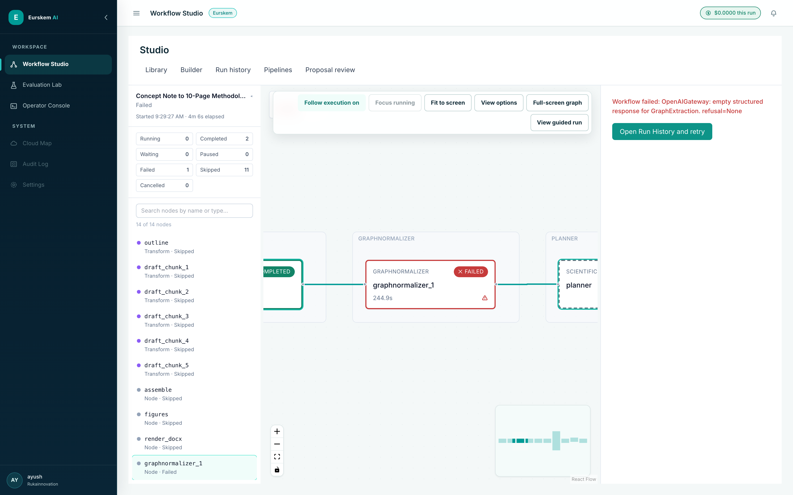
graphnormalizer_1 failed after 244.9 s; upstream work is preserved as COMPLETED and
everything downstream is explicitly SKIPPED rather than silently missing. Use this if you want a
second limitation: the provider-level cause is surfaced verbatim, which is honest but not yet
self-explanatory to a non-engineer."To summarise, Eurskem AI connects the business experience and engineering controls around one workflow definition and one run. Non-technical users work in Guided Run, operators inspect Cockpit, authors use typed Builder controls, and reviewers can trace evidence, model choices, cost, and human decisions.
The central design choice is visibility: the work, evidence, failures, decisions, and cost remain inspectable instead of being hidden inside one model response. Thank you for watching."
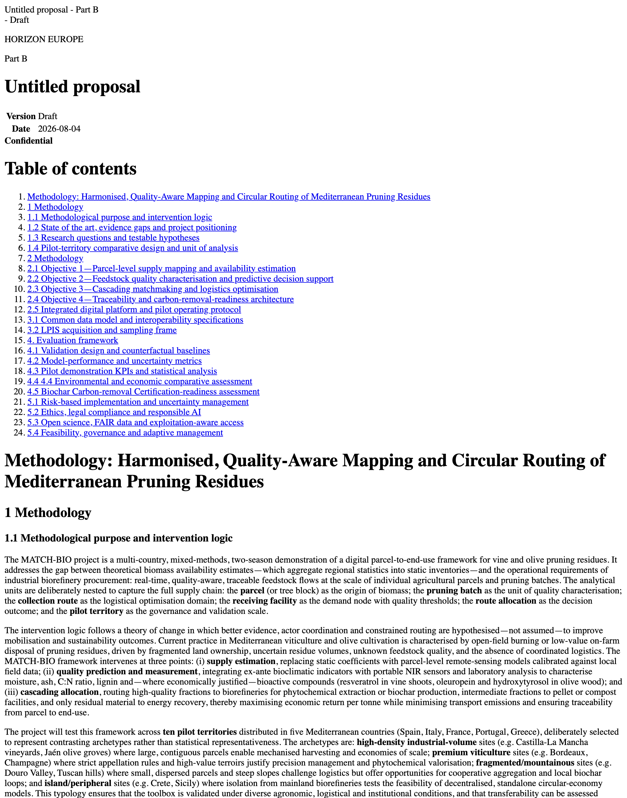
NEEDS INPUT rather than truncating silently — a good last frame,
because it is the whole thesis in one screen.Appendix
| Shot | File | Beat |
|---|---|---|
| 1 | 01-workflow-library.png | 1 — Introduction |
| 2 | 02-library-concept-note-card.png | 2 — Business goal |
| 3 | 03-guided-run-overview.png | 3 — Guided Run |
| 4 | 06-cockpit-graph.png | 3 — Cockpit |
| 5 | 09-builder-canvas-palette.png | 4 — Builder layout |
| 6 | 12-builder-preflight.png | 4 — Zero-token preflight |
| 7 | 11-builder-configure.png | 4 — Typed configuration |
| 8 | 14-builder-map-data.png | 4 — Data mapping |
| 9 | 13-builder-versions.png | 4 — Version history |
| 10 | 07-cockpit-node-detail.png | 8 — Failure localisation |
| 11 | 23-output-proposal-cover-toc.png | 9 — Closing |
Optional B-roll from the same capture set: 10b-builder-graph-fanout.png
(the five-way drafting fan-out, excellent under beat 4's "branch test" line),
17-run-detail-nodes.png (per-node durations, good under beat 7's cost narration),
20-cockpit-audit.png, 24-output-proposal-body.png.
| Artefact | Where it lives | Beat |
|---|---|---|
| Node execution boundary | app/runtime/compiler.py:63 | 5 |
| Atomic save + version record | app/workflow/builder_store.py:34,135 | 4 |
| Fail-closed evidence policy | app/evidence/models.py:46 | 6 |
| Acquisition report | run 1f2c3a4d · acquire_research_sources.report | 6 |
| QA report, 0 verified claims | run 1f2c3a4d · verify_evidence.qa_report | 6 |
| Fallback ledger record | eurskem_ai.cost_ledger · ed462b3e / outline | 7 |
ed462b3e — not as a hypothetical.